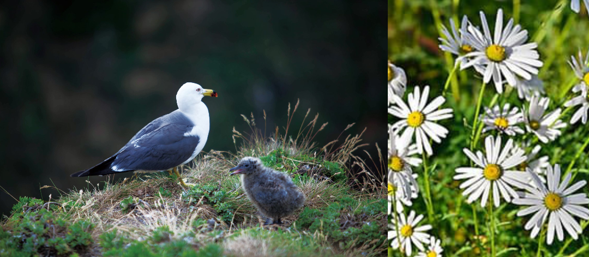

자연관
지형과 지질
독도는 화산 활동으로 형성된 화산섬으로, 용암과 화산암으로 이루어져 있다.두 개의 주요 섬, 동도와 서도, 그리고 89개의 작은 바위섬으로 구성되어 있다. 독도의 지형은 험준하며 해안선은 절벽과 바위로 둘러싸여 있다.

경상북도 울릉군에 속한 독도는 대한민국 정부 소유(독도 행정 관리: 해양수산부)의 국유지로서 1982년 천연기념물로 지정되었다.
간단한 정보
- 주소: 경상북도 울릉군 울릉읍 독도리 1~96(분번 포함 101필지)
- 위치: 좌표는 동도 삼각점 기준으로 북위 37도 14분 22초, 동경 131도 52분 08초이며, 울릉도의 동남향 87.4㎞
- 주요지점 간의 거리: 울릉도/87.4㎞, 동해/243.8㎞, 죽변/216.8㎞, 포항/258.3㎞, 부산/348.4㎞, 오끼섬/157.5㎞
독도의 지질
- 일반적으로 ‘독도’는 여러 차례의 화산활동으로 형성된 거대한 화산체 중에서 해수면 위로 드러난 부분, 즉 동도와 서도를 포함한 30여 개의 작은 암초들만을 일컫는 것이다. 독도와 연결되어 해수면 아래에 잠겨있는 화산체 전체를 명명할 때에는 해저지명의 원칙에 따라 ‘독도해산’이라고 한다. 독도해산은 크게 3개의 봉우리로 구성되어 있는데 이 중 2개는 물속에 잠겨있고, 1개는 정상부가 수면 위로 솟아 있는데 그 섬이 바로 독도이다. 독도에서 수면 위로 가장 높게 노출된 서도의 높이가 168m에 지나지 않지만 독도해산의 바닥부분이 약 25㎞, 정상부 폭만 해도 약 13㎞에 달하고 수심도 2㎞가 넘어 독도의 대부분은 물에 잠겨 있다고 할 수 있다.
- 현재 독도의 암상을 통해 형성과정을 유추해보면 크게 몇 단계로 구분할 수 있다.
- 단계: 해수면 아래에서 분출이 일어났던 시기로 하부의 괴상응회각력암과 조면안산암이 상당한 시간적 간격을 두고 생성되었다.
- 단계: 독도해산이 수면 가까이에서 폭발적인 분출이 있었으며 수면 위로 완전히 상승한 후 대기 중 용암 분출 및 화성쇄설성 분출이 나타났다. 이 때 층상라필리응회암과 층상응회암이 형성되었다.
- 단계: 폭발적 분출이 조용한 분출로 전환되면서 조면안산암질 용암이 분출되었다.
- 단계: 해수가 유입되거나 화산 자체에 비축된 폭발력에 의해 막혀있던 화구에서 수증기 마그마성 폭발이 발생한다.
- 단계: 화구주변에 발달한 단층이나 절리를 따라 조면암의 관입이 나타난다.
- 마지막: 화산활동이 멈춘 이후 파랑의 침식에 의해 독도해산의 상부 대부분이 침식되어 평탄한 형태를 띠고 이후 해수면 상승에 의해 현재와 같은 형태로 남게 되었다. 현재 해수면 위의 독도는 장경이 약 2.5㎞, 단경이 약 1.5㎞인 독도칼데라 외륜부의 남서쪽 잔류체로 생각된다.
- 독도와 주변 암초들에서 관찰되는 화산암류는 생성 시기를 기준으로 하부조면암 용암, 괴상 응회각력암, 층상 라필리응회암 및 응회암, 조면안산암 용암, 스코리아성 라필리 응회암, 상부조면암 용암, 조면암 관입체, 조면암 암맥, 열극충진각력암으로 분류할 수 있다.
생태계
독도에는 약 50여 종의 식물이 자라고 있으며, 그 중 일부는 독도 특유의 환경에 적응한 식물들이다. 독도에 자생하는 주요 식물로는 동도나무, 독도사초, 울릉국화 등이 있다.
독도 주변 해역은 다양한 해양 생물의 서식지다. 해양 생물로는 조개류, 갑각류, 어류 등이 있으며, 특히 독도 주변 바다는 오징어, 대구, 고등어 등의 어종이 풍부하다. 육지에서는 독도쥐, 바다새(가마우지, 괭이갈매기 등)와 같은 동물들이 서식하고 있다.
수산업은 독도의 핵심 산업이다. 독도의 근해는 북한한류와 동한난류가 교차하는 조경(潮境)수역으로서 플랑크톤이 풍부해 매우 훌륭한 어장이 된다. 회유성 어족인 연어, 송어, 대구를 비롯해 명태, 꽁치, 오징어, 상어가 주종을 이룬다. 예전에는 강치(물개)가 많아 어부들에게 인기가 있었으나, 지금은 포획금지 대상이다. 또한 해저암초에는 다시마, 미역, 해삼, 문어, 소라, 전복, 김 등의 해조류들이 풍성해 어민들의 주요 수입원이 되고 있다.
계절별 어업
- 겨울~초봄: 명태 어장
- 여름~가을(9월~1월): 오징어 어장